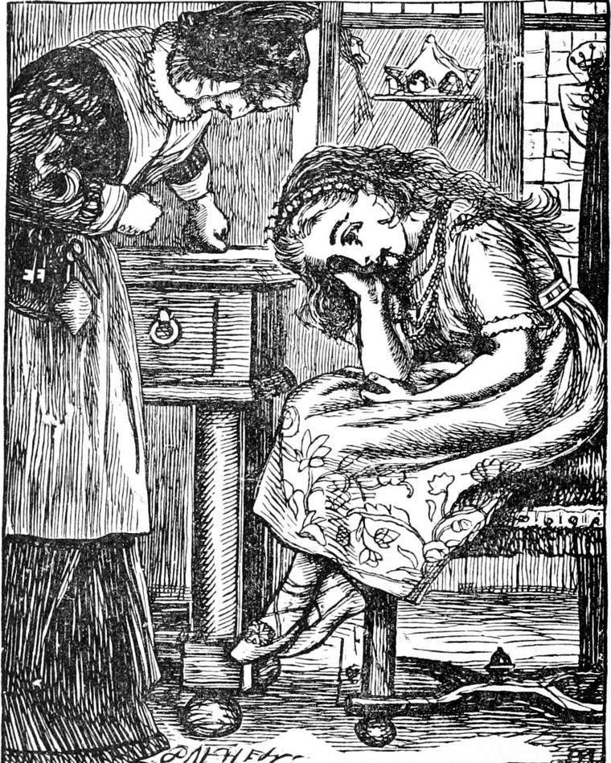

I have said the Princess Irene was about eight years old when my story begins. And this is how it begins.
One very wet day, when the mountain was covered with mist which was constantly gathering itself together into raindrops, and pouring down on the roofs of the great old house, whence it fell in a fringe of water from the eaves all round about it, the princess could not of course go out. She got very tired, so tired that even her toys could no longer amuse her. You would wonder at that if I had time to describe to you one half of the toys she had. But then, you wouldn't have the toys themselves, and that makes all the difference: you can't get tired of a thing before you have it. It was a picture, though, worth seeing—the princess sitting in the nursery with the sky ceiling over her head, at a great table covered with her toys. If the artist would like to draw this, I should advise him not to meddle with the toys. I am afraid of attempting to describe them, and I think he had better not try to draw them. He had better not. He can do a thousand things I can't, but I don't think he could draw those toys. No man could better make the princess herself than he could, though—leaning with her back bowed into the back of the chair, her head hanging down, and her hands in her lap, very miserable as she would say herself, not even knowing what she would like, except it were to go out and get thoroughly wet, and catch a particularly nice cold, and have to go to bed and take gruel. The next moment after you see her sitting there, her nurse goes out of the room.

Even that is a change, and the princess wakes up a little, and looks about her. Then she tumbles off her chair and runs out of the door, not the same door the nurse went out of, but one which opened at the foot of a curious old stair of worm-eaten oak, which looked as if never anyone had set foot upon it. She had once before been up six steps, and that was sufficient reason, in such a day, for trying to find out what was at the top of it.
Up and up she ran—such a long way it seemed to her!—until she came to the top of the third flight. There she found the landing was the end of a long passage. Into this she ran. It was full of doors on each side. There were so many that she did not care to open any, but ran on to the end, where she turned into another passage, also full of doors. When she had turned twice more, and still saw doors and only doors about her, she began to get frightened. It was so silent! And all those doors must hide rooms with nobody in them! That was dreadful. Also the rain made a great trampling noise on the roof. She turned and started at full speed, her little footsteps echoing through the sounds of the rain—back for the stairs and her safe nursery. So she thought, but she had lost herself long ago. It doesn't follow that she was lost, because she had lost herself, though.
She ran for some distance, turned several times, and then began to be afraid. Very soon she was sure that she had lost the way back. Rooms everywhere, and no stair! Her little heart beat as fast as her little feet ran, and a lump of tears was growing in her throat. But she was too eager and perhaps too frightened to cry for some time. At last her hope failed her. Nothing but passages and doors everywhere! She threw herself on the floor, and burst into a wailing cry broken by sobs.
She did not cry long, however, for she was as brave as could be expected of a princess of her age. After a good cry, she got up, and brushed the dust from her frock. Oh, what old dust it was! Then she wiped her eyes with her hands, for princesses don't always have their handkerchiefs in their pockets, any more than some other little girls I know of. Next, like a true princess, she resolved on going wisely to work to find her way back: she would walk through the passages, and look in every direction for the stair. This she did, but without success. She went over the same ground again an again without knowing it, for the passages and doors were all alike. At last, in a corner, through a half-open door, she did see a stair. But alas! it went the wrong way: instead of going down, it went up. Frightened as she was, however, she could not help wishing to see where yet further the stair could lead. It was very narrow, and so steep that she went on like a four-legged creature on her hands and feet.